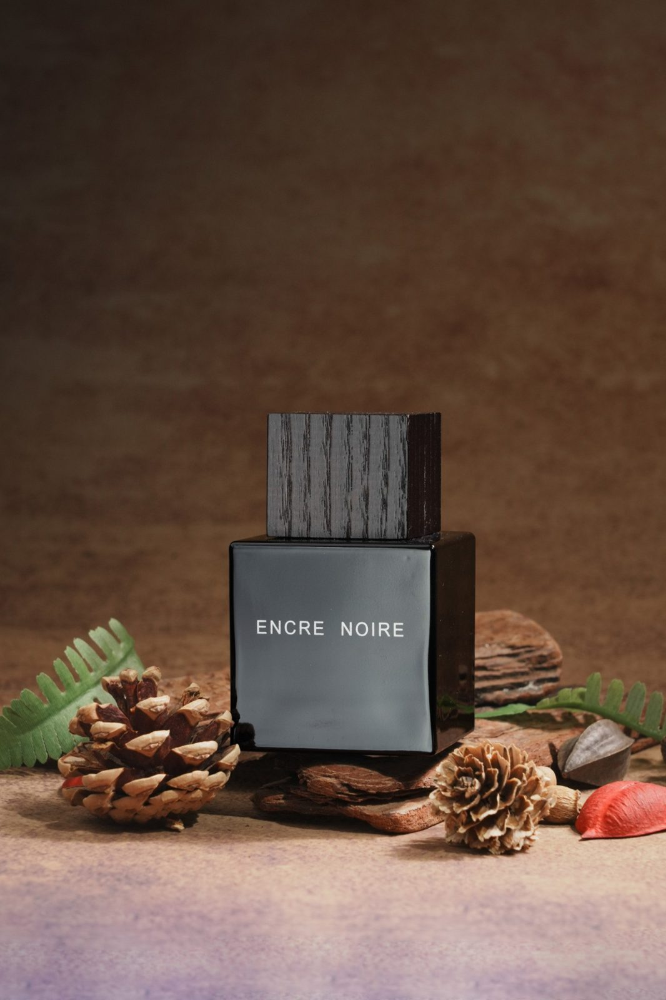
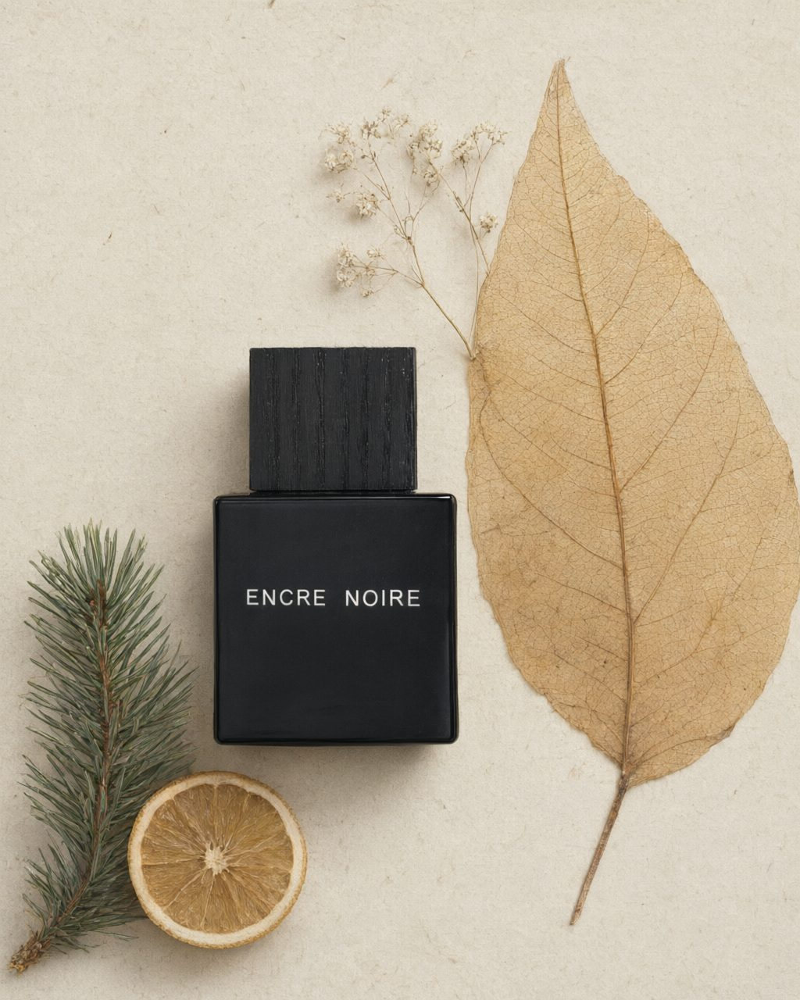
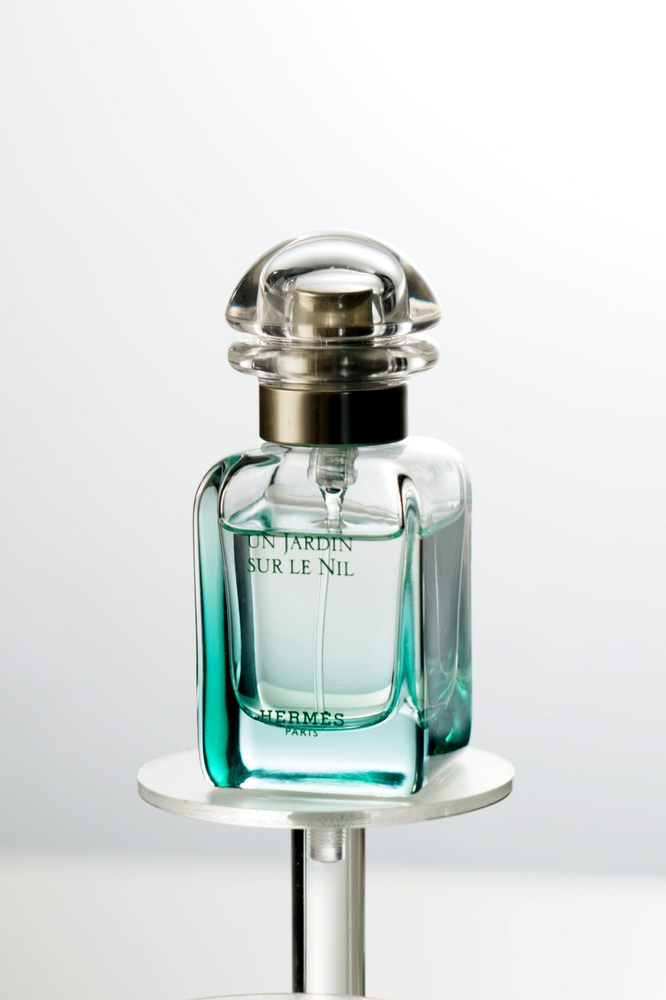
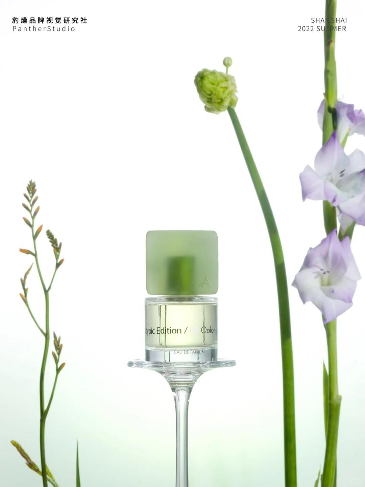
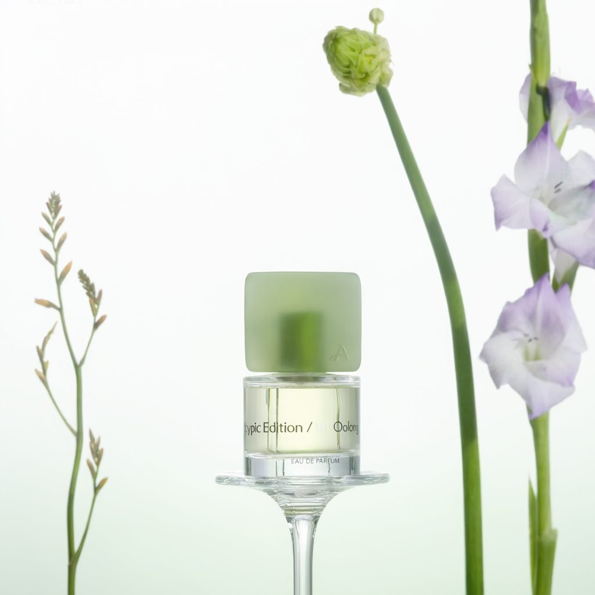
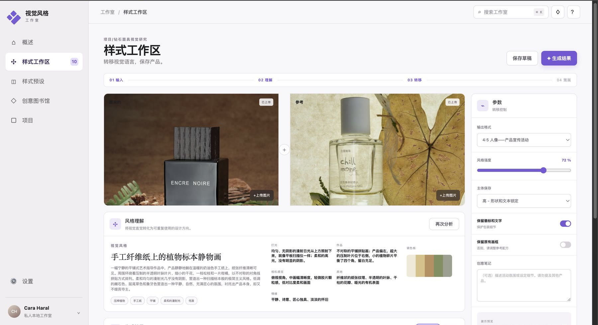
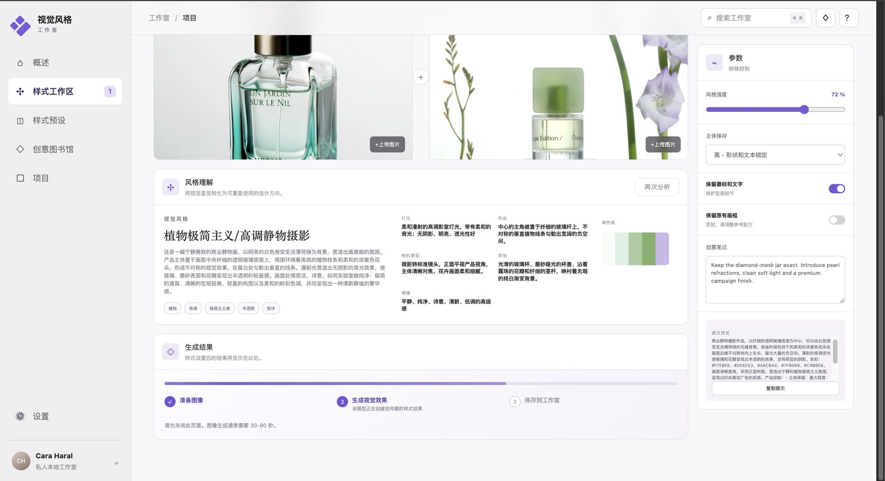
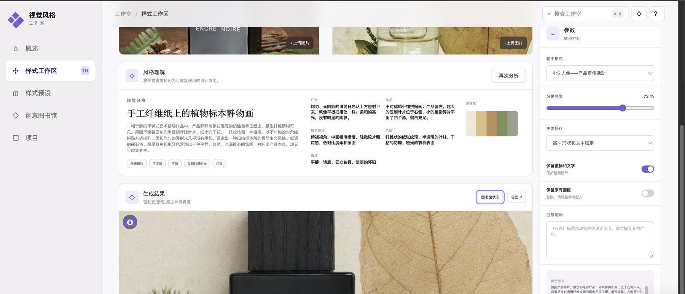

主体容易失真
包装、瓶型、Logo 与文字在风格迁移中被改变，产品身份丢失。
FROM PRODUCTION TO PRODUCT
作为摄影生产者，我的工作经常从找参考、拆解视觉方向、对齐拍摄方案开始。真正耗时的不是缺少灵感，而是把一句“想要这张图的感觉”翻译成摄影、灯光、置景和后期都能执行的语言。
我需要的不是一个更会聊天的模型，而是一个记得产品限制、理解参考图角色、并能保存每次实验依据的工作台。
“高级、干净、有质感”对摄影师、客户和模型都不是可执行指令，沟通反复发生。
需要把感性判断拆成色彩、灯光、构图、镜头、材质和情绪，同时锁定产品身份。
优先完成 Original + Reference → 分析 → Prompt → 生成 → Experiment，把可控性和可追溯性放在首位。
从“双图一起生成”降级为“先分析 Reference，生成阶段只编辑 Original”的主体安全模式。
CORE EVIDENCE
目标不是复制参考图，而是让同一摄影团队依据参考图的艺术方向，重新拍摄用户自己的产品。


结果保留黑色方形瓶身、木纹瓶盖与可辨识的 ENCRE NOIRE 文字；参考图中的透明香水瓶没有进入结果。
THE USER PROBLEM
商业视觉创作散落在灵感网站、聊天式 AI、生图工具和本地文件夹之间。每次生成都要重新解释产品限制，结果也难以复用和追溯。
包装、瓶型、Logo 与文字在风格迁移中被改变，产品身份丢失。
“这张参考图好看”无法自然转成颜色、光线、构图、材质和镜头语言。
Prompt、输入图、结果与参数留在不同工具里，下一轮又从零开始。
WHY NOT JUST GPT?
ChatGPT 已能理解图片、生成与编辑视觉，也能在 Projects 中保留文件和上下文。差异不在“模型会不会”，而在产品是否默认理解这项工作的角色、约束、资产和成本。
定位判断：通用 GPT 更适合开放式探索；Studio 更适合需要主体保真、重复试验和过程追溯的产品视觉生产。关于 ChatGPT 当前的图像与 Projects 能力，参考 官方能力说明与 Projects 说明。
CORE WORKFLOW
Original 锁定主体；Reference 只提供艺术方向。
拆解色板、光线、构图、镜头、材质与情绪。
输出 OpenAI、SD、Midjourney 与 ComfyUI 版本。
主体锁、反向约束、画幅与保真参数进入真实请求。
输入、参数、Prompt、结果和备注回到 Library / Experiment。
WHAT THE PRODUCT DOES
并列上传 Original 与 Reference，从入口消除“谁是主体、谁是风格”的歧义。
把参考图拆成可编辑的视觉规则、关键词、色板和四类平台 Prompt。
将参考产品从最终请求中剥离，以角色锁、反向提示和可选取景控制保护 Original。
支持 4:5、1:1、9:16、16:9；主体保真、Logo 和创作备注会真正进入请求。
显示准备、生成、保存三阶段；尺寸、配置与 Schema 在付费调用前校验。
Project、Creative Library 与 Experiment 保存输入、分析、参数、结果和备注。
一次性灵感讨论、开放式审美探索、快速生成一张不要求追溯的图片。
产品身份不能错、同一方向要反复试、Prompt 要跨平台交付、结果需要回到项目资产。
PRODUCT DECISIONS
“保留产品”和“学习参考构图”并不冲突：锁定的是产品身份，不是原拍摄背景。
主体保真、Logo、画幅、构图与创作备注会进入生成 Prompt，并随 Experiment 保存。
输入尺寸、Provider 配置与返回 Schema 在服务端前置校验，降低失败与重复付费风险。
参考图分析沉淀为可编辑、跨平台、可追溯的视觉规则，而不是一次性聊天记录。
FAILURE → ITERATION
早期双图输入中，模型让参考产品抢占了主体。画面可以“好看”，但核心价值已经失败。



两张图都含同类产品，参考图的视觉信号压过文字说明。
继续堆叠 Prompt 不能稳定解决角色竞争；主体保真应优先于逐像素复刻参考图。
启用主体安全模式：先把 Reference 转成结构化艺术指导，最终编辑只发送 Original。
ENCRE NOIRE 样本中，原产品身份被保留，参考产品未被复制，风格语言仍成功迁移。
SUBJECT-SAFE MODE
系统先读取 Reference 的可迁移视觉规则，再在最终生成阶段只提交 Original 与结构化艺术指导。中英双语角色锁和反向提示明确禁止替代产品。
色彩 · 光线 · 构图 · 材质 · 情绪
只保留可迁移规则
形状 · 包装 · Logo · 文字
主体锁定，风格迁移
PRODUCT INTERFACE
界面把双角色输入、风格理解、生成参数、进度反馈和结果沉淀放在同一工作区。以下截图来自本地私有 Studio；公开页面只展示截图与案例。



PROVIDER & COST BOUNDARY
API Key 只保留在服务端私有环境。公开作品集不开放真实 Provider；未来若开放试用，必须先加入登录、白名单、次数限制、后端限流与预算告警。
VALIDATION
我按同一规则重新检查了项目中已有的 10 次真实实验。它不是随机、同条件或多人盲评，因此只能作为方向性证据，不能替代正式 A/B 测试。
产品身份可接受
其中 6 / 7 出现参考产品抢占主体产品身份可接受
0 / 3 直接复制参考产品